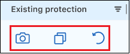
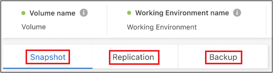
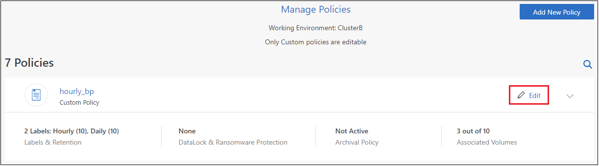

Notes de mise à jour
Notes de mise à jour
Gérez les sauvegardes de vos systèmes ONTAP
 Suggérer des modifications
Suggérer des modifications
Vous pouvez gérer les sauvegardes de vos systèmes Cloud Volumes ONTAP et ONTAP sur site en modifiant la planification des sauvegardes, en activant/désactivant les sauvegardes de volume, en interrompant les sauvegardes, en supprimant les sauvegardes, etc. Cela inclut tous les types de sauvegardes, y compris les copies Snapshot, les volumes répliqués et les fichiers de sauvegarde dans le stockage objet.

|
Ne gérez pas et ne modifiez pas les fichiers de sauvegarde directement sur vos systèmes de stockage ou depuis l'environnement de votre fournisseur cloud. Cela peut corrompre les fichiers et entraîner une configuration non prise en charge. |
Afficher l'état des sauvegardes des volumes de vos environnements de travail
Vous pouvez afficher la liste de tous les volumes en cours de sauvegarde dans le tableau de bord des volumes Backup. Cela inclut tous les types de sauvegardes, y compris les copies Snapshot, les volumes répliqués et les fichiers de sauvegarde dans le stockage objet. Vous pouvez également afficher les volumes des environnements de travail qui ne sont pas actuellement sauvegardés.
-
Dans le menu BlueXP, sélectionnez protection > sauvegarde et récupération.
-
Cliquez sur l'onglet volumes pour afficher la liste des volumes sauvegardés pour vos systèmes Cloud Volumes ONTAP et ONTAP sur site.

-
Si vous recherchez des volumes spécifiques dans certains environnements de travail, vous pouvez affiner la liste en fonction de l'environnement de travail et du volume. Vous pouvez également utiliser le filtre de recherche ou trier les colonnes en fonction du style de volume (FlexVol ou FlexGroup), du type de volume, etc.
Pour afficher des colonnes supplémentaires (agrégats, style de sécurité (Windows ou UNIX), règles de snapshot, règles de réplication et règles de sauvegarde), sélectionnez
 .
. -
Consultez l'état des options de protection dans la colonne « protection existante ». Les 3 icônes correspondent aux « copies Snapshot locales », « volumes répliqués » et « sauvegardes dans le stockage objet ».

Chaque icône est bleue lorsque ce type de sauvegarde est activé et grise lorsque le type de sauvegarde est inactif. Vous pouvez placer le curseur de la souris sur chaque icône pour afficher la stratégie de sauvegarde utilisée, ainsi que d'autres informations pertinentes pour chaque type de sauvegarde.
Activer la sauvegarde sur des volumes supplémentaires dans un environnement de travail
Si vous avez activé la sauvegarde uniquement sur certains volumes d'un environnement de travail lorsque vous avez activé la sauvegarde et la restauration BlueXP pour la première fois, vous pouvez activer les sauvegardes sur d'autres volumes ultérieurement.
-
Dans l'onglet volumes, identifiez le volume sur lequel vous souhaitez activer les sauvegardes, sélectionnez le menu actions
 À la fin de la ligne, et sélectionnez Activer la sauvegarde.
À la fin de la ligne, et sélectionnez Activer la sauvegarde.
-
Dans la page Define backup Strategy, sélectionnez l'architecture de sauvegarde, puis définissez les règles et autres détails pour les copies Snapshot locales, les volumes répliqués et les fichiers de sauvegarde. Voir les détails des options de sauvegarde des volumes initiaux que vous avez activés dans cet environnement de travail. Cliquez ensuite sur Suivant.
-
Vérifiez les paramètres de sauvegarde de ce volume, puis cliquez sur Activer la sauvegarde.
Si vous souhaitez activer la sauvegarde sur plusieurs volumes en même temps avec des paramètres de sauvegarde identiques, reportez-vous à la section Modifier les paramètres de sauvegarde sur plusieurs volumes pour plus d'informations.
Modifier les paramètres de sauvegarde attribués aux volumes existants
Vous pouvez modifier les règles de sauvegarde attribuées à vos volumes existants auxquels des règles ont été attribuées. Vous pouvez modifier les règles de vos copies Snapshot locales, volumes répliqués et fichiers de sauvegarde. Toute nouvelle snapshot, réplication ou règle de sauvegarde que vous souhaitez appliquer aux volumes doit déjà exister.
Modifiez les paramètres de sauvegarde sur un seul volume
-
Dans l'onglet volumes, identifiez le volume que vous souhaitez modifier, puis sélectionnez le menu actions
À la fin de la ligne, et sélectionnez Modifier la stratégie de sauvegarde.
-
Sur la page Modifier la stratégie de sauvegarde, modifiez les règles de sauvegarde existantes pour les copies Snapshot locales, les volumes répliqués et les fichiers de sauvegarde, puis cliquez sur Suivant.
Si vous avez activé DataLock et protection contre les ransomware pour les sauvegardes cloud dans la stratégie de sauvegarde initiale lors de l'activation de la sauvegarde et de la restauration BlueXP pour ce cluster, vous ne verrez que les autres stratégies configurées avec DataLock. Et si vous n'avez pas activé DataLock et protection contre les ransomware lors de l'activation de la sauvegarde et de la restauration BlueXP, vous ne verrez que les autres stratégies de sauvegarde dans le cloud qui n'ont pas configuré DataLock.
-
Vérifiez les paramètres de sauvegarde de ce volume, puis cliquez sur Activer la sauvegarde.
Modifier les paramètres de sauvegarde sur plusieurs volumes
Si vous souhaitez utiliser les mêmes paramètres de sauvegarde sur plusieurs volumes, vous pouvez activer ou modifier simultanément les paramètres de sauvegarde sur plusieurs volumes. Vous pouvez sélectionner des volumes sans paramètres de sauvegarde, uniquement des paramètres Snapshot, sauvegarder uniquement dans les paramètres cloud, etc., et apporter des modifications en bloc à tous ces volumes à l'aide de divers paramètres de sauvegarde.
Lorsque vous travaillez avec plusieurs volumes, tous les volumes doivent avoir les caractéristiques communes suivantes :
-
même environnement de travail
-
Même style (volume FlexVol ou FlexGroup)
-
Même type (lecture-écriture ou volume protection des données)
-
Dans l'onglet volumes, filtrez en fonction de l'environnement de travail sur lequel résident les volumes.
-
Sélectionnez tous les volumes sur lesquels vous souhaitez gérer les paramètres de sauvegarde.
-
Selon le type d'action de sauvegarde que vous souhaitez configurer, cliquez sur le bouton dans le menu actions groupées :

Action de sauvegarde… Cliquez sur ce bouton… Gérer les paramètres de sauvegarde Snapshot
Gérer les instantanés locaux
Gérer les paramètres de sauvegarde de la réplication
Gérer la réplication
Gérez les paramètres de sauvegarde dans le cloud
Gérer la sauvegarde
Gérer plusieurs types de paramètres de sauvegarde. Cette option vous permet également de modifier l'architecture de sauvegarde.
Gérer la sauvegarde et la récupération
-
Dans la page de sauvegarde qui s'affiche, modifiez les règles de sauvegarde existantes pour les copies Snapshot locales, les volumes répliqués ou les fichiers de sauvegarde, puis cliquez sur Enregistrer.
Si vous avez activé DataLock et protection contre les ransomware pour les sauvegardes cloud dans la stratégie de sauvegarde initiale lors de l'activation de la sauvegarde et de la restauration BlueXP pour ce cluster, vous ne verrez que les autres stratégies configurées avec DataLock. Et si vous n'avez pas activé DataLock et protection contre les ransomware lors de l'activation de la sauvegarde et de la restauration BlueXP, vous ne verrez que les autres stratégies de sauvegarde dans le cloud qui n'ont pas configuré DataLock.
Créez une sauvegarde de volume manuelle à tout moment
Vous pouvez créer une sauvegarde à la demande à tout moment pour capturer l'état actuel du volume. Cela peut être utile si des modifications importantes ont été apportées à un volume et que vous ne voulez pas attendre la prochaine sauvegarde planifiée pour protéger ces données. Vous pouvez également utiliser cette fonctionnalité pour créer une sauvegarde pour un volume qui n'est pas en cours de sauvegarde et pour capturer son état actuel.
Vous pouvez créer une copie Snapshot ad hoc ou une sauvegarde vers l'objet d'un volume. Vous ne pouvez pas créer de volume répliqué ad hoc.
Le nom de la sauvegarde inclut l'horodatage afin que vous puissiez identifier votre sauvegarde à la demande à partir d'autres sauvegardes planifiées.
Si vous avez activé DataLock et protection contre les ransomware lors de l'activation de la sauvegarde et de la restauration BlueXP pour ce cluster, la sauvegarde à la demande sera également configurée avec DataLock et la période de conservation sera de 30 jours. Les analyses par ransomware ne sont pas prises en charge pour les sauvegardes ad hoc. "En savoir plus sur le verrouillage des données et la protection contre les attaques par ransomware".
Notez que lors de la création d'une sauvegarde ad hoc, un Snapshot est créé sur le volume source. Cet instantané ne faisant pas partie d'une planification Snapshot normale, il ne sera pas désactivé. Vous pouvez supprimer manuellement cet instantané du volume source une fois la sauvegarde terminée. Ainsi, les blocs liés à cette copie Snapshot peuvent être libérés. Le nom de l'instantané commence par cbs-snapshot-adhoc-. "Reportez-vous à la section mode de suppression d'une copie Snapshot à l'aide ONTAP de l'interface de ligne de commandes de".

|
La sauvegarde de volumes à la demande n'est pas prise en charge sur les volumes de protection des données. |
-
Dans l'onglet volumes, cliquez sur
 Pour le volume et sélectionnez Backup > Create ad-hoc Backup.
Pour le volume et sélectionnez Backup > Create ad-hoc Backup.
La colonne État de la sauvegarde de ce volume affiche « en cours » jusqu'à ce que la sauvegarde soit créée.
Afficher la liste des sauvegardes pour chaque volume
Vous pouvez afficher la liste de tous les fichiers de sauvegarde existants pour chaque volume. Cette page affiche des informations détaillées sur le volume source, l'emplacement de destination et les détails de la sauvegarde, tels que la dernière sauvegarde effectuée, la stratégie de sauvegarde actuelle, la taille du fichier de sauvegarde, etc.
-
Dans l'onglet volumes, cliquez sur
Pour le volume source et sélectionnez Afficher les détails du volume.
Les détails du volume et la liste des copies Snapshot sont affichés par défaut.

-
Sélectionnez instantané, réplication ou sauvegarde pour afficher la liste de tous les fichiers de sauvegarde pour chaque type de sauvegarde.

Exécutez une analyse anti-ransomware sur une sauvegarde de volume dans le stockage objet
Le logiciel de protection contre les ransomwares NetApp analyse vos fichiers de sauvegarde pour détecter une attaque par ransomware lors de la création d'une sauvegarde dans un fichier objet et lorsque les données d'un fichier de sauvegarde sont restaurées. Vous pouvez également exécuter une analyse à la demande de la protection contre les ransomwares pour vérifier à tout moment que vous utilisez un fichier de sauvegarde spécifique dans le stockage objet. Ceci peut être utile si vous avez eu un problème de ransomware sur un volume en particulier et que vous souhaitez vérifier que les sauvegardes de ce volume ne sont pas affectées.
Cette fonctionnalité est disponible uniquement si la sauvegarde de volume a été créée à partir d'un système doté de ONTAP 9.11.1 ou version ultérieure et si vous avez activé DataLock et protection contre les ransomware dans la stratégie de sauvegarde vers l'objet.
-
Dans l'onglet volumes, cliquez sur
Pour le volume source et sélectionnez Afficher les détails du volume.Les détails du volume s'affichent.
-
Sélectionnez Backup pour afficher la liste des fichiers de sauvegarde dans le stockage objet.

-
Cliquez sur
Pour le fichier de sauvegarde de volume que vous voulez analyser pour détecter les ransomware et cliquez sur Rechercher des ransomware.
La colonne protection contre les ransomware indique que l'analyse est en cours.
Gérer la relation de réplication avec le volume source
Après avoir configuré la réplication des données entre deux systèmes, vous pouvez gérer la relation de réplication des données.
-
Dans l'onglet volumes, cliquez sur
Pour le volume source et sélectionnez l'option Replication. Vous pouvez voir toutes les options disponibles. -
Sélectionnez l'action de réplication à effectuer.

Le tableau suivant décrit les actions disponibles :
Action Description Afficher la réplication
Affiche des informations détaillées sur la relation de volume : informations de transfert, informations relatives au dernier transfert, informations détaillées sur le volume et informations sur la stratégie de protection attribuée à la relation.
Mettre à jour la réplication
Lance un transfert incrémentiel pour mettre à jour le volume de destination à synchroniser avec le volume source.
Interrompre la réplication
Mettez en pause le transfert incrémentiel de copies Snapshot pour mettre à jour le volume de destination. Vous pouvez reprendre ultérieurement si vous souhaitez redémarrer les mises à jour incrémentielles.
Interrompre la réplication
Rompt la relation entre les volumes source et de destination et active le volume de destination pour l'accès aux données, en faisant des opérations de lecture-écriture.
Cette option est généralement utilisée lorsque le volume source ne peut pas servir de données en raison d'événements tels que la corruption des données, la suppression accidentelle ou un état hors ligne.
"Découvrez comment configurer un volume de destination pour l'accès aux données et réactiver un volume source dans la documentation ONTAP"Abandonner la réplication
Désactive les sauvegardes de ce volume sur le système de destination et désactive également la restauration d'un volume. Les sauvegardes existantes ne seront pas supprimées. Cela ne supprime pas la relation de protection des données entre les volumes source et destination.
Resynchronisation inverse
Inverse les rôles des volumes source et de destination. Le contenu du volume source d'origine est remplacé par le contenu du volume de destination. Ceci est utile lorsque vous souhaitez réactiver un volume source hors ligne.
Toutes les données écrites sur le volume source d'origine entre la dernière réplication de données et l'heure à laquelle le volume source a été désactivé ne sont pas conservées.Supprimer la relation
Supprime la relation de protection des données entre les volumes source et de destination, ce qui signifie que la réplication des données n'a plus lieu entre les volumes. Cette action n'active pas le volume de destination pour l'accès aux données, ce qui signifie qu'il ne le fait pas en lecture-écriture. Cette action supprime également la relation entre pairs de cluster et la relation entre la machine virtuelle de stockage (SVM), en l'absence d'autres relations de protection des données entre les systèmes.
Après avoir sélectionné une action, BlueXP met à jour la relation.
Modifier une stratégie de sauvegarde dans le cloud existante
Vous pouvez modifier les attributs d'une stratégie de sauvegarde actuellement appliquée aux volumes d'un environnement de travail. La modification de la stratégie de sauvegarde affecte tous les volumes existants utilisant la règle.
|
|
|
-
Dans l'onglet volumes, sélectionnez Paramètres de sauvegarde.

-
Dans la page Backup Settings, cliquez sur
Pour l'environnement de travail dans lequel vous souhaitez modifier les paramètres de la stratégie, sélectionnez gérer les stratégies.
-
Dans la page Manage Policies, cliquez sur Edit pour la stratégie de sauvegarde que vous souhaitez modifier dans cet environnement de travail.

-
Dans la page Edit Policy, cliquez sur
 Pour développer la section Labels & Retention afin de modifier la planification et/ou la rétention des sauvegardes, puis cliquez sur Enregistrer.
Pour développer la section Labels & Retention afin de modifier la planification et/ou la rétention des sauvegardes, puis cliquez sur Enregistrer.
Si votre cluster exécute ONTAP 9.10.1 ou version supérieure, vous pouvez également activer ou désactiver le Tiering des sauvegardes dans le stockage d'archivage après un certain nombre de jours.
"En savoir plus sur l'utilisation du stockage d'archives Google". (Nécessite ONTAP 9.12.1.)
+
+ Notez que tous les fichiers de sauvegarde qui ont été hiérarchisés vers le stockage d'archivage sont conservés dans ce niveau si vous arrêtez le Tiering des sauvegardes vers l'archivage - ils ne sont pas automatiquement déplacés vers le niveau standard. Seules les sauvegardes de volume nouveaux résident dans le niveau standard.
Ajoutez une nouvelle règle de sauvegarde dans le cloud
Lorsque vous activez la sauvegarde et la restauration BlueXP pour un environnement de travail, tous les volumes que vous sélectionnez initialement sont sauvegardés à l'aide de la règle de sauvegarde par défaut que vous avez définie. Si vous souhaitez attribuer différentes stratégies de sauvegarde à certains volumes ayant des objectifs de point de récupération différents, vous pouvez créer des règles supplémentaires pour ce cluster et les affecter à d'autres volumes.
Si vous souhaitez appliquer une nouvelle stratégie de sauvegarde à certains volumes d'un environnement de travail, vous devez d'abord ajouter la stratégie de sauvegarde à l'environnement de travail. C'est alors possible appliquer la policy aux volumes de cet environnement de travail.
|
|
|
-
Dans l'onglet volumes, sélectionnez Paramètres de sauvegarde.
-
Dans la page Backup Settings, cliquez sur
Pour l'environnement de travail où vous souhaitez ajouter la nouvelle stratégie, sélectionnez gérer les stratégies. -
Dans la page Manage Policies, cliquez sur Add New Policy.

-
Dans la page Ajouter une nouvelle stratégie, cliquez sur
Pour développer la section Labels & Retention afin de définir la planification et la conservation des sauvegardes, puis cliquez sur Enregistrer.
Si votre cluster exécute ONTAP 9.10.1 ou version supérieure, vous pouvez également activer ou désactiver le Tiering des sauvegardes dans le stockage d'archivage après un certain nombre de jours.
"En savoir plus sur l'utilisation du stockage d'archives Google". (Nécessite ONTAP 9.12.1.)
+
Supprimer les sauvegardes
La sauvegarde et la restauration BlueXP vous permettent de supprimer un seul fichier de sauvegarde, de supprimer toutes les sauvegardes d'un volume ou de supprimer toutes les sauvegardes de tous les volumes d'un environnement de travail. Vous pouvez supprimer toutes les sauvegardes si vous n'avez plus besoin des sauvegardes, ou si vous avez supprimé le volume source et que vous souhaitez supprimer toutes les sauvegardes.
Notez que vous ne pouvez pas supprimer les fichiers de sauvegarde que vous avez verrouillés à l'aide de DataLock et de la protection contre les attaques par ransomware. L'option « Supprimer » n'est pas disponible dans l'interface utilisateur si vous avez sélectionné un ou plusieurs fichiers de sauvegarde verrouillés.
|
|
Si vous prévoyez de supprimer un environnement ou un cluster de travail qui dispose de sauvegardes, vous devez supprimer les sauvegardes avant de supprimer le système. La sauvegarde et la restauration BlueXP ne suppriment pas automatiquement les sauvegardes lorsque vous supprimez un système et il n'existe pas de prise en charge à jour dans l'interface utilisateur pour supprimer les sauvegardes une fois le système supprimé. Vous continuerez d'être facturé pour les coûts de stockage objet pour les sauvegardes restantes. |
Supprimez tous les fichiers de sauvegarde d'un environnement de travail
La suppression de toutes les sauvegardes du stockage objet pour un environnement de travail ne désactive pas les sauvegardes futures des volumes de cet environnement de travail. Si vous souhaitez arrêter la création de sauvegardes de tous les volumes d'un environnement de travail, vous pouvez désactiver les sauvegardes comme décrit ici.
Notez que cette action n'a aucun impact sur les copies Snapshot ou les volumes répliqués. Ces types de fichiers de sauvegarde ne sont pas supprimés.
-
Dans l'onglet volumes, sélectionnez Paramètres de sauvegarde.
-
Cliquez sur
Pour l'environnement de travail où vous souhaitez supprimer toutes les sauvegardes et sélectionnez Supprimer toutes les sauvegardes.
-
Dans la boîte de dialogue de confirmation, entrez le nom de l'environnement de travail et cliquez sur Supprimer.
Supprimez un seul fichier de sauvegarde pour un volume
Vous pouvez supprimer un seul fichier de sauvegarde si vous n'en avez plus besoin. Cela inclut la suppression d'une sauvegarde unique d'une copie Snapshot de volume ou d'une sauvegarde dans le stockage objet.
Vous ne pouvez pas supprimer de volumes répliqués (volumes de protection des données).
-
Dans l'onglet volumes, cliquez sur
Pour le volume source et sélectionnez Afficher les détails du volume.Les détails du volume sont affichés et vous pouvez sélectionner Snapshot, Replication ou Backup pour afficher la liste de tous les fichiers de sauvegarde du volume. Par défaut, les copies Snapshot disponibles sont affichées.
-
Sélectionnez instantané ou sauvegarde pour voir le type de fichiers de sauvegarde que vous souhaitez supprimer.
-
Cliquez sur
Pour le fichier de sauvegarde de volume que vous souhaitez supprimer, cliquez sur Supprimer. La capture d'écran ci-dessous provient d'un fichier de sauvegarde dans le stockage objet.
-
Dans la boîte de dialogue de confirmation, cliquez sur Supprimer.
Supprimez les relations de sauvegarde de volume
La suppression de la relation de sauvegarde d'un volume vous fournit un mécanisme d'archivage si vous souhaitez arrêter la création de nouveaux fichiers de sauvegarde et supprimer le volume source, mais conserver tous les fichiers de sauvegarde existants. Cela vous permet de restaurer ultérieurement le volume à partir du fichier de sauvegarde, si nécessaire, tout en libérant de l'espace du système de stockage source.
Vous n'avez pas nécessairement besoin de supprimer le volume source. Vous pouvez supprimer la relation de sauvegarde d'un volume et conserver le volume source. Dans ce cas, vous pouvez activer la sauvegarde sur le volume ultérieurement. La copie de sauvegarde de base d'origine continue d'être utilisée dans ce cas. Une nouvelle copie de sauvegarde de base n'est pas créée et exportée vers le cloud. Notez que si vous réactivez une relation de sauvegarde, la stratégie de sauvegarde par défaut est attribuée au volume.
Cette fonction n'est disponible que si votre système exécute ONTAP 9.12.1 ou une version ultérieure.
Vous ne pouvez pas supprimer le volume source de l'interface utilisateur de sauvegarde et de restauration BlueXP. Cependant, vous pouvez ouvrir la page Détails du volume sur la toile, et "supprimez le volume de ce site".
|
|
Une fois la relation supprimée, vous ne pouvez pas supprimer des fichiers de sauvegarde de volume individuels. Vous pouvez cependant "supprimez toutes les sauvegardes du volume" si vous souhaitez supprimer tous les fichiers de sauvegarde. |
-
Dans l'onglet volumes, cliquez sur
Pour le volume source et sélectionnez Backup > Delete Relationship.
Désactivez la sauvegarde et la restauration BlueXP dans un environnement de travail
La désactivation de la sauvegarde et de la restauration BlueXP pour un environnement de travail désactive les sauvegardes de chaque volume du système, et désactive également la restauration d'un volume. Les sauvegardes existantes ne seront pas supprimées. Cela ne désinscrit pas le service de sauvegarde de cet environnement de travail, car il vous permet de suspendre l'ensemble de l'activité de sauvegarde et de restauration pendant une période donnée.
Notez que vous continuerez d'être facturé par votre fournisseur cloud pour les coûts de stockage objet correspondant à la capacité que vos sauvegardes utilisent, sauf si vous supprimez les sauvegardes.
-
Dans l'onglet volumes, sélectionnez Paramètres de sauvegarde.
-
Dans la page Backup Settings, cliquez sur
Pour l'environnement de travail dans lequel vous souhaitez désactiver les sauvegardes et sélectionnez Désactiver la sauvegarde.
-
Dans la boîte de dialogue de confirmation, cliquez sur Désactiver.
|
|
Un bouton Activer la sauvegarde apparaît pour cet environnement de travail alors que la sauvegarde est désactivée. Vous pouvez cliquer sur ce bouton lorsque vous souhaitez réactiver la fonctionnalité de sauvegarde pour cet environnement de travail. |
Annulez l'enregistrement de la sauvegarde et de la restauration BlueXP dans un environnement de travail
Vous pouvez annuler l'enregistrement des sauvegardes BlueXP dans un environnement de travail si vous ne souhaitez plus utiliser les fonctionnalités de sauvegarde et si vous souhaitez arrêter de payer les sauvegardes de cet environnement de travail. Cette fonction est généralement utilisée lorsque vous prévoyez de supprimer un environnement de travail et que vous souhaitez annuler le service de sauvegarde.
Vous pouvez également utiliser cette fonction si vous souhaitez modifier le magasin d'objets de destination dans lequel vos sauvegardes de cluster sont stockées. Une fois que vous avez désenregistré la sauvegarde et la restauration BlueXP pour l'environnement de travail, vous pouvez activer la sauvegarde et la restauration BlueXP pour ce cluster en utilisant les nouvelles informations de votre fournisseur cloud.
Avant de pouvoir annuler l'enregistrement de la sauvegarde et de la restauration BlueXP, vous devez effectuer les étapes suivantes, dans l'ordre suivant :
-
Désactivez la sauvegarde et la restauration BlueXP pour l'environnement de travail
-
Supprimer toutes les sauvegardes de cet environnement de travail
L'option de désenregistrer n'est pas disponible tant que ces deux actions ne sont pas terminées.
-
Dans l'onglet volumes, sélectionnez Paramètres de sauvegarde.
-
Dans la page Backup Settings, cliquez sur
Pour l'environnement de travail où vous souhaitez annuler l'enregistrement du service de sauvegarde et sélectionnez Annuler l'enregistrement.
-
Dans la boîte de dialogue de confirmation, cliquez sur Annuler l'enregistrement.